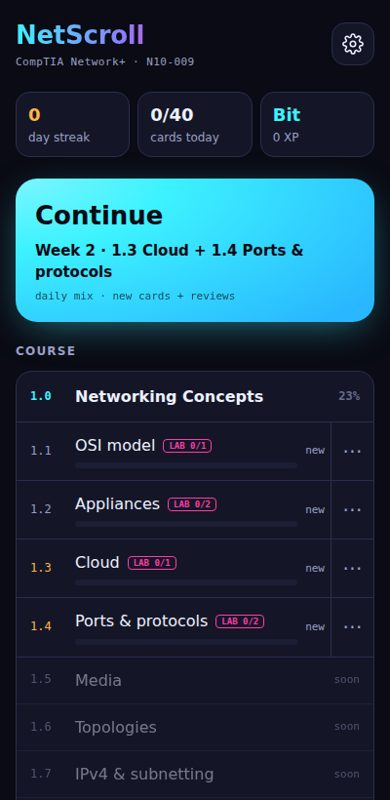

NetScroll
A TikTok-style study app for CompTIA Network+. Short animated concept cards, a question within a few swipes, and spaced review of everything I miss.
- 233 cards and 6 lab missions so far, in English and Russian
- FSRS spaced repetition and a "second chance" warm-up on wrong answers
- A validator that checks every card's facts before publishing
